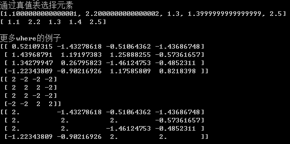

• NumPy数组使你可以将许多种数据处理任务表述为简洁的数组表达式（否则需
要编写循环）。用数组表达式代替循环的做法，通常被称为矢量化。
• 矢量化数组运算要比等价的纯Python方式快上一两个数量级
# -*- coding: utf-8 -*-
import matplotlib.pyplot as plt
import numpy as np
import pylab
points = np.arange(-5, 5, 0.01) # 生成100个点
xs, ys = np.meshgrid(points, points) # xs, ys互为转置矩阵
print xs
print ys
z = np.sqrt(xs ** 2 + ys ** 2)
print z
# 画图
plt.imshow(z, cmap = plt.cm.gray);
plt.colorbar()
plt.title("Image plot of $\sqrt{x^2 + y^2}$ for a grid of values")
pylab.show()
利用数组进行数据处理 将条件逻辑表述为数组运算
• 列表推导的局限性
• 纯Python代码，速度不够快。
• 无法应用于高维数组
• where和where的嵌套
# -*- coding: utf-8 -*-
import numpy as np
import numpy.random as np_random
'''
关于zip函数的一点解释，zip可以接受任意多参数，然后重新组合成1个tuple列表。
zip([1, 2, 3], [4, 5, 6], [7, 8, 9])
返回结果：[(1, 4, 7), (2, 5, 8), (3, 6, 9)]
'''
print('通过真值表选择元素')
x_arr = np.array([1.1, 1.2, 1.3, 1.4, 1.5])
y_arr = np.array([2.1, 2.2, 2.3, 2.4, 2.5])
cond = np.array([True, False, True, True, False])
result = [( x if c else y) for x, y, c in zip(x_arr, y_arr, cond)] # 通过列表推到实现
print(result)
print(np.where(cond, x_arr, y_arr)) # 使用NumPy的where函数
print()
print('更多where的例子')
arr = np_random.randn(4, 4)
print(arr)
print(np.where(arr > 0, 2, -2))
print(np.where(arr > 0, 2, arr))
where 相当于一个if else 语句：针对ndrray对象的每个单个元素

print('where嵌套')
cond_1 = np.array([True, False, True, True, False])
cond_2 = np.array([False, True, False, True, False])
# 传统代码如下
result = [ ]
for i in xrange(len(cond)):
if cond_1[i] and cond_2[i]:
result.append(0)
elif cond_1[i]:
result.append(1)
elif cond_2[i]:
result.append(2)
else:
result.append(3)
print (result)
# np版本代码
result = np.where(cond_1 & cond_2, 0, np.where(cond_1, 1, np.where(cond_2, 2, 3))
print(result)

数学和统计方法
• 数学和统计方法

• 标准差和方差的解释
• cumsum和cumprod的解释
• 带axis参数的统计函数
import numpy as np
import numpy.random as np_random
print('求和，求平均')
arr = np.random.randn(5, 4)
print(arr)
print(arr.mean())
print(arr.sum())
print(arr.mean(axis = 1)) # 对每一行的元素求平均
print(arr.sum(0)) # 对每一列元素求和，axis可以省略。
print()
'''
cumsum:
- 按列操作：a[i][j] += a[i - 1][j]
- 按行操作：a[i][j] *= a[i][j - 1]
cumprod:
- 按列操作：a[i][j] += a[i - 1][j]
- 按行操作：a[i][j] *= a[i][j - 1]
'''
print( 'cunsum和cumprod函数演示')
arr = np.array([[0, 1, 2], [3, 4, 5], [6, 7, 8]])
print(arr.cumsum(0))
print(arr.cumprod(1))
用于布尔型数组的方法
• sum对True值计数
• any和all测试布尔型数组，对于非布尔型数组，所有非0元素将会被当做True。
# -*- coding: utf-8 -*-
import numpy as np
import numpy.random as np_random
print '对正数求和'
arr = np_random.randn(100)
print ((arr > 0).sum())
print()
print '对数组逻辑操作'
bools = np.array([False, False, True, False])
print (bools.any())# 有一个为True则返回True
print (bools.all())# 有一个为False则返回False

排序
• 直接排序
• 指定轴排序
# -*- coding: utf-8 -*-
import numpy as np
import numpy.random as np_random
print('一维数组排序')
arr = np_random.randn(8)
arr.sort()
print(arr)
print()
print ('二维数组排序')
arr = np_random.randn(5, 3)
print (arr)
arr.sort(1) # 对每一行元素做排序
print (arr)
print( '找位置在5%的数字')
large_arr = np_random.randn(1000)
large_arr.sort()
print (large_arr[int(0.05 * len(large_arr))])
去重以及其它集合运算
• 去重以及其它集合运算

# -*- coding: utf-8 -*-
import numpy as np
import numpy.random as np_random
print '用unique函数去重'
names = np.array(['Bob', 'Joe', 'Will', 'Bob', 'Will', 'Joe', 'Joe'])
print sorted(set(names)) # 传统Python做法
print np.unique(names)
ints = np.array([3, 3, 3, 2, 2, 1, 1, 4, 4])
print np.unique(ints)
print
print '查找数组元素是否在另一数组'
values = np.array([6, 0, 0, 3, 2, 5, 6])
print np.in1d(values, [2, 3, 6])

数组文件的输入输出
• 将数组以二进制格式保存到磁盘
• 存取文本文件
读取：
# -*- coding: utf-8 -*-
import numpy as np
print （'读取csv文件做为数组'）
arr = np.loadtxt('array_ex.txt', delimiter = ',')
print （arr）
写入：
# -*- coding: utf-8 -*-
import numpy as np
print '数组文件读写'
arr = np.arange(10)
np.save('some_array', arr)
print np.load('some_array.npy')
print
print '多个数组压缩存储'
np.savez('array_archive.npz', a = arr, b = arr)
arch = np.load('array_archive.npz')
print arch['b']

线性代数
•常用的numpy.linalg函数


# -*- coding: utf-8 -*-
import numpy as np
import numpy.random as np_random
from numpy.linalg import inv, qr
print '矩阵乘法'
x = np.array([[1., 2., 3.], [4., 5., 6.]])
y = np.array([[6., 23.], [-1, 7], [8, 9]])
print x.dot(y)
print np.dot(x, np.ones(3))
x = np_random.randn(5, 5)
print
print '矩阵求逆'
mat = x.T.dot(x)
print inv(mat) # 矩阵求逆
print mat.dot(inv(mat)) # 与逆矩阵相乘，得到单位矩阵。
print
print '矩阵消元'
print mat
q, r = qr(mat)
print q
print r
随机数生成
• 部分numpy.random函数


# -*- coding: utf-8 -*-
import numpy as np
import numpy.random as np_random
from random import normalvariate
print '正态分布随机数'
samples = np.random.normal(size=(4, 4))
print samples
print '批量按正态分布生成0到1的随机数'
N = 10
print [normalvariate(0, 1) for _ in xrange(N)]
print np.random.normal(size = N) # 与上面代码等价
高级应用 数组重塑
• reshape重塑数组
• -1自动推导维度大小
# -*- coding: utf-8 -*-
import numpy as np
print "将一维数组转换为二维数组"
arr = np.arange(8)
print arr.reshape((4, 2))
print arr.reshape((4, 2)).reshape((2, 4)) # 支持链式操作
print
print "维度大小自动推导"
arr = np.arange(15)
print arr.reshape((5, -1))
print
print "获取维度信息并应用"
other_arr = np.ones((3, 5))
print other_arr.shape
print arr.reshape(other_arr.shape)
print
print "高维数组拉平"
arr = np.arange(15).reshape((5, 3))
print arr.ravel()
数组的合并和拆分
• 数组连接函数

• _r对象
• _c对象
# -*- coding: utf-8 -*-
import numpy as np
import numpy.random as np_random
print('连接两个二维数组')
arr1 = np.array([[1, 2, 3], [4, 5, 6]])
arr2 = np.array([[7, 8, 9], [10, 11, 12]])
print (np.concatenate([arr1, arr2], axis = 0)) # 按行连接
print (np.concatenate([arr1, arr2], axis = 1)) # 按列连接
print()
# 所谓堆叠，参考叠盘子。。。连接的另一种表述
print ('垂直stack与水平stack')
print (np.vstack((arr1, arr2))) # 垂直堆叠
print (np.hstack((arr1, arr2))) # 水平堆叠
print()
print ('拆分数组')
arr = np_random.randn(5, 5)
print(arr)
print('水平拆分')
first, second, third = np.split(arr, [1, 3], axis = 0)
print('first')
print(first)
print('second')
print(second)
print('third')
print(third)
print('垂直拆分')
first, second, third = np.split(arr, [1, 3], axis = 1)
print('first')
print(first)
print('second')
print(second)
print('third')
print(third)
print()
# 堆叠辅助类
arr = np.range(6)
arr1 = arr.reshape((3,2))
arr2 = arr_random.randn(3,2)
print ('r_用于按行堆叠')
print (np.r_[arr1, arr2])
print ('c_用于按列堆叠')
print (np.c_[np.r_[arr1, arr2], arr])
print ('切片直接转为数组')
print (np.c_[1:6, -10:-5])


元素的重复操作
• _tile
• _repeat
# -*- coding: utf-8 -*-
import numpy as np
import numpy.random as np_random
print 'Repeat: 按元素'
arr = np.arange(3)
print arr.repeat(3)
print arr.repeat([2, 3, 4]) # 3个元素，分别复制2, 3, 4次。长度要匹配！
print
print 'Repeat，指定轴'
arr = np_random.randn(2, 2)
print arr
print arr.repeat(2, axis = 0) # 按行repeat
print arr.repeat(2, axis = 1) # 按列repeat
print arr.repeat(2, axis = 0) # 按行repeat
print
print 'Tile: 参考贴瓷砖'
print np.tile(arr, 2)
print np.tile(arr, (2, 3)) # 指定每个轴的tile次数
花式索引的等价函数
• take
• put
# -*- coding: utf-8 -*-
import numpy as np
import numpy.random as np_random
print 'Fancy Indexing例子代码'
arr = np.arange(10) * 100
inds = [7, 1, 2, 6]
print arr[inds]
print
print '使用take'
print arr.take(inds)
print
print '使用put更新内容'
arr.put(inds, 50)
print arr
arr.put(inds, [70, 10, 20, 60])
print arr
print
print 'take，指定轴'
arr = np_random.randn(2, 4)
inds = [2, 0, 2, 1]
print arr
print arr.take(inds, axis = 1) # 按列take